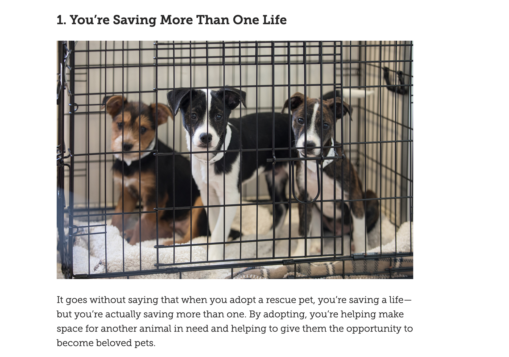
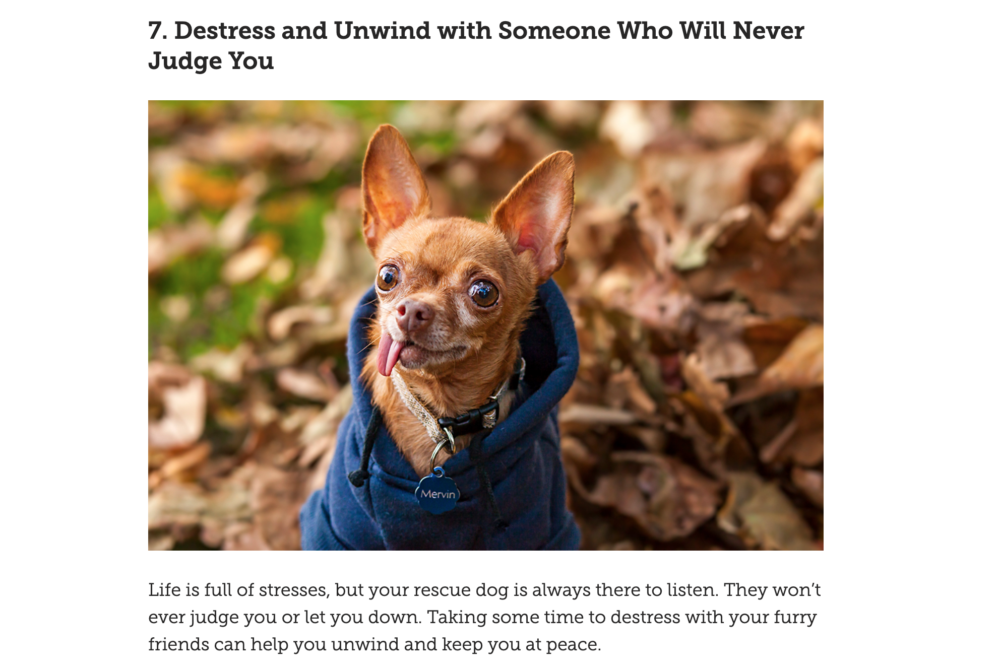
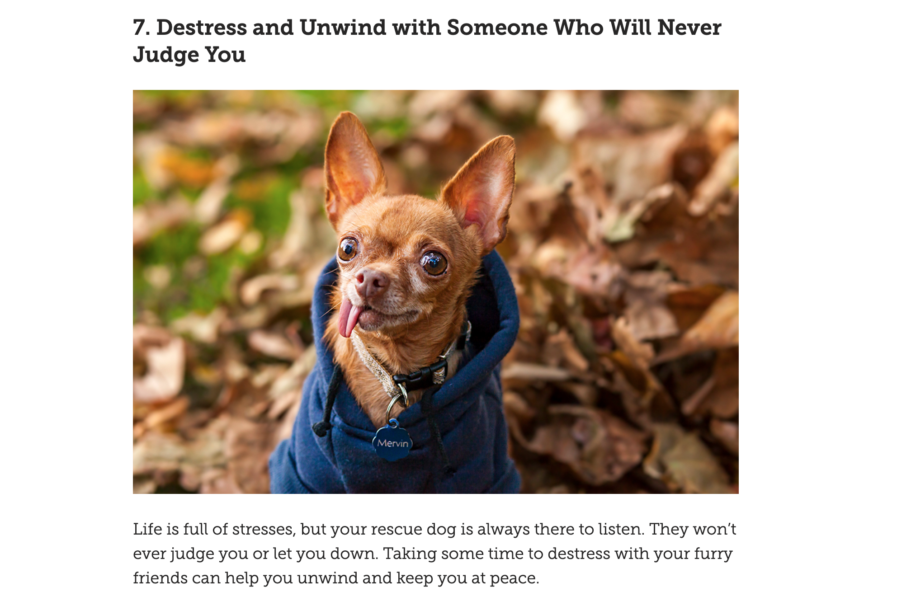

Secondary Research
This area of research involves the collection of the secondary information on animal care, including adopting, donating, volunteering
Benefits of Adopting a Pet from a Shelter
Adopting a pet from a shelter has many benefits. Not only is saving a puppy better than breeding one, it benefits multiple animals. Adopting a pet from a shelter makes a new place for another animal to come in. An animal from a shelter needs just as much love as a breeded one, if not more! These abanonded animals deserve a second chance at a loving place to call home. Adopting from a shelter fights back against cruel breeding that can be harmful to the animals as they may not recieve any love or care. Spending time with any pet can lower stress levels for you and your animal, and shelter animals have just as much love to give as you, the owner.
Donating
If adopting isn't an action that you want to take but still want to be involved in bettering the lives of animals, donating to shelter make a huge differnce for humane societies. Financial donations are easy for the shleters because they can put the money where they need it most. If you cant donate money, they also accept items for the animals, this is wehre sponsoring a pet for the Pickens County Humane Society would come in.
Volunteering
There are other ways to pitch in besides donating money or items, you can donate time by volunteering. Humane Societies across the country are in need of assistance, because of the overwhelming amount of intake rates and number of adoptions. The number of animals grow in shelters from stray animals brought from the streets by authorities or Good Samaritans, animals rescued from cruel homes and taken in for rehabilitation, and animals that were surrendered because they can no longer be taken care of by their families.



 



Interviews
I was unable to get in contact and conduct an interview with anyone involved or affiliated with the Pickens County Humane Society. Because of this, I decided to interview two users that would visit the website for adoption information, has adopted a pet from a shelter, or will adopt, donate, or volunteer evetually. I interviewed a fellow college student and my mother who works with underprivilaged people.
Fellow College Student and Lover of Animals
This is a link to the interview conducted with Hailey Cash, a fellow college student.
This interview from Hailey Cash allowed her love for animals reflect in her answers. Someone like her would visit the site or even the Humane Society itself to adopt pets. She has three adopted pets herself so she categorizes as a fan of animal shelters. She pointed out that when going to the Pickens Humane Society's website, it is important to see images of the pets that are available to adopt as well as information on the specific animals. She also made it clear that having easy access to links on how to adopt, donate, or volunteer would be extremeley beneficial for the shelter's website.
Business Owner and Mother
This is a link to the interview conducted with my mother who is a owns a boarding home for underprivilaged people.
When conducting this interview with my mother, she reminded me of the connection between her personal business and the goal of many animal shelters. As she helps aid underprivilaged people either get back on their feet or find happiness in a home, shelters are doing that exact thing for pets. She has also adopted animals that need homes to be pets to the residence in her boarding homes. The adopted pets gain families as the people in her homes gain companions. This interview brought to my attention that clear communication on the website is important to gear towards all audiences, even those with learning disabilites.